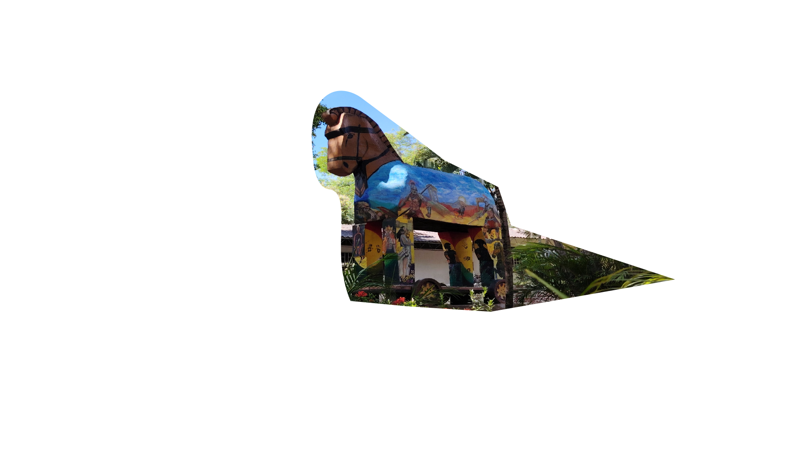
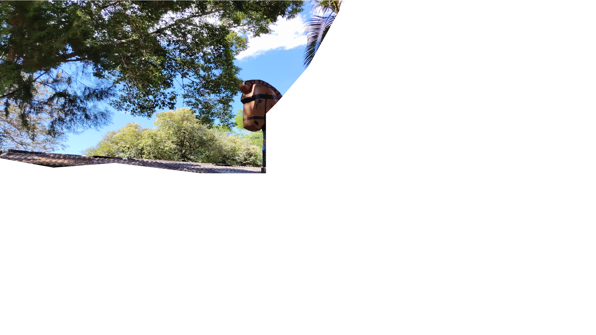
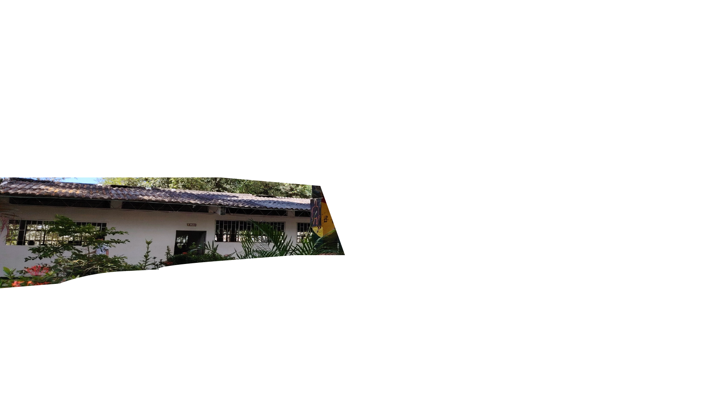

Institución Educativa · Campoalegre, Huila
Formamos estudiantes íntegros, con conocimiento, valores y compromiso con su comunidad.
El colegio nació en el siglo XX para ampliar la cobertura educativa en Campoalegre y evitar que los jóvenes tuvieran que viajar a Neiva para cursar su secundaria. Lleva el nombre de Eugenio Ferro Falla, ilustre líder de la región huilense.
Con el tiempo se consolidó como Institución Educativa, integró sedes de primaria y ofrece hoy un ciclo completo desde preescolar hasta la media, con formación técnica en convenio con el SENA.
Leer más© 2026 Institución Educativa Eugenio Ferro Falla. Todos los derechos reservados.